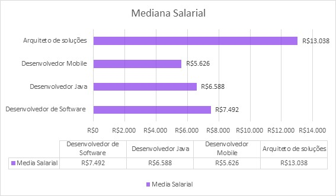

Uma pesquisa envolvendo profissionais da área que aborda a profissão, seus gastos associados e as perspectivas atuais no mercado.
Feito por Marco Antonio Barp e Rodrigo BonatoO profissional de desenvolvimento de software, também conhecido como "dev" em alguns casos, desempenha um papel fundamental na operação das tecnologias contemporâneas, abrangendo criação de websites, o desenvolvimento de aplicativos, a gestão de sistemas operacionais, os avanços em inteligência artificial e muito mais.
As linguagens de programação são utilizadas pelos desenvolvedores para escrever códigos. Como exemplo:
Ultilizando esse linguagem de programação eles precisam levar em consideração aspectos como a estrutura do banco de dados, a interface do usuário e a lógica de negócios. Além de serem encarregadosde testar o que criam, a segurança é outro ponto de preocupação crucial, e os desenvolvedores devem estar cientes das melhores práticas de segurança e implementá-las em seus projetos.
Alguns desenvolvedores se especializam no desenvolvimento de interfaces de usuário(front-end), enquanto outros se concentram na lógica de servidor e no gerenciamento de dados (back-end). Alguns desenvolvedores são full-stack, o que significa que podem trabalhar em ambos os aspectos.
Para entrar no ramo de desenvolvimento de software, comece aprendendo os fundamentos de programação e considere a educação formal ou recursos online. Pratique programação em projetos pessoais, construa um portfólio, aprenda Git, participe de comunidades, especialize-se e considere estágios ou trabalho freelancer. Mantenha-se atualizado, prepare-se para entrevistas, faça networking e, eventualmente, candidate-se a empregos na área. Lembre-se de que a aprendizagem contínua é fundamental para o sucesso como desenvolvedor de software.
Com base em pesquisas realizadas com profissionais da área, tornou-se evidente quais são os custos, objetivos, estruturas e elementos fundamentais para a vida de um desenvolvedor. Alguns exemplos incluem:
Na região de Porto Alegre, há várias opções educacionais para desenvolvedores de software, incluindo universidades como a UFRGS e a PUCRS, institutos técnicos, escolas de tecnologia privadas e cursos online. Também é importante considerar programas de bolsas de estudo, financiamento e participação em eventos da indústria de tecnologia para networking e atualização.
Em questão de trabalhar em meio período enquanto estuda, é possível como desenvolvedor de software. Isso requer flexibilidade, comunicação eficaz, gerenciamento de tempo e priorização. Considere estágios remunerados e esteja preparado para desafios, lembrando de cumprir regulamentos locais.
Os Devs enfrentam desafios como manutenção de código, evolução tecnológica, prazos apertados, comunicação eficaz, segurança, escalabilidade, compatibilidade, documentação, equipes distribuídas e pressão por inovação em sua profissão. Esses desafios podem variar dependendo do projeto e das circunstâncias.
Na pesquisa realizada, a seguinte pergunta foi feita: "Quais orientações você forneceria aos jovens que estão atualmente no processo de seleção de uma carreira profissional?"
Conselhos para jovens que desejam se tornar desenvolvedores:
A estabilidade financeira de um desenvolvedor de software pode variar significativamente com base em vários fatores, tais como a localização geográfica, o nível de experiência, a especialização, a empresa em que trabalha e o setor em que está inserido.
A profissão de Desenvolvedor de Software é altamente valorizada no setor de tecnologia, com uma remuneração média de R$7.492,00. De acordo com informações do Glassdoor, foram enviados 841 salários sigilosamente, os Desenvolvedores de Software juniores têm uma mediana salarial de R$5.067,50 por mês, enquanto os profissionais mais experientes alcançam uma mediana salarial de R$12.069,00.
Para atender a essa crescente necessidade, existem várias opções de educação disponíveis, com diferentes durações e níveis de profundidade. Seriam eles:
Duração: Meses a 1 ano.
Custos: Variam de preços, R$ 120,00 até R$ 270,00.
Duração: 3 a 4 anos.
Custos: Entre R$ 2000,00 até R$ 3500,00.
Duração: Vária de algumas semanas até meses.
Custos: De R$ 35,00 até R$ 500,00.
Na área de desenvolvimento de software, os níveis de experiência e especialização são divididos em três estágios: desenvolvedores juniores, plenos e sêniores. Esses estágios representam diferentes níveis de experiência e competências dentro de uma equipe de desenvolvimento de software, tipicamente indicando o nível de habilidade, responsabilidade e independência de um desenvolvedor em suas funções.
A demanda por desenvolvedores de software está em constante crescimento, impulsionada pela crescente integração da tecnologia em nossas vidas e na economia. Os desenvolvedores têm a oportunidade de se especializar em áreas como inteligência artificial, segurança cibernética e IoT, tornando-se altamente valorizados. Conhecimentos em aprendizado de máquina e computação em nuvem são vantagens competitivas, enquanto a automação e o trabalho remoto estão se tornando mais comuns. A ética e a segurança cibernética são preocupações crescentes, exigindo que os desenvolvedores considerem implicações éticas e proteção contra ameaças. A educação contínua é essencial devido à rápida evolução tecnológica, e habilidades interpessoais, como comunicação e trabalho em equipe, são cada vez mais valorizadas.